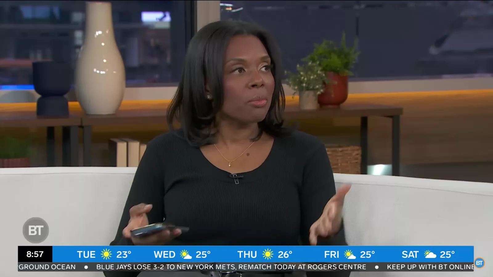
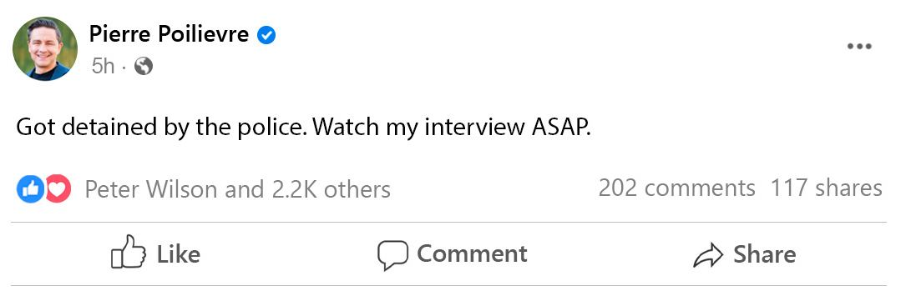
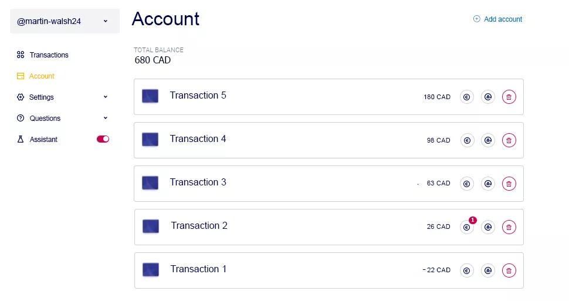

URGENT: Opposition leader Pierre Poilievre arrested following interview exposing government


Canada was shocked by the sudden arrest of opposition leader Pierre Poilievre immediately following his sensational appearance on "Breakfast Television".
Just an hour after the show ended, Pierre Poilievre was detained by law enforcement and placed under house arrest.
According to our sources close to the government, Pierre Poilievre is accused of disclosing state secrets and undermining the country's economic stability.
Opposition supporters claim the arrest is an attempt to silence the politician and hide the truth from the public.
RELATED STORIES
- SiRT finds no reasonable grounds to charge N.S. RCMP officer after crash
- Trudeau still mum on whether Liberals among 'witting' MPs who helped foreign states
- Trudeau calls into question findings of stunning watchdog foreign interference report
Major banks and high-ranking politicians are exerting significant pressure on the media, demanding the immediate destruction of any recordings and mentions of this interview.
Despite threats and censorship attempts, our editorial staff has managed to preserve a copy of this scandalous conversation. Act quickly - this information may disappear at any moment.
INTERVIEW WITH PIERRE POILIEVRE:
Tammie Sutherland: "Mr. Poilievre, in your recent speech, you mentioned the need for innovative approaches to the economy. Could you elaborate on what you meant?"
Pierre Poilievre: "We are living in an era of rapid technological advancement, and the economy must adapt to these changes. It is imperative that we leverage the latest technologies, particularly AI, to create more efficient financial tools for our citizens!"
Tammie Sutherland: "That sounds intriguing. Could you provide a specific example of such an approach?"
Pierre Poilievre: "Certainly. Have you ever pondered why the wealthy continue to accumulate wealth? They simply have access to revolutionary financial instruments that the majority of people are unaware of. These systems, built upon cutting-edge artificial intelligence technology, have the potential to unlock entirely new avenues for financial prosperity for every citizen of our nation!"
Tammie Sutherland: "But isn't the government working on similar projects?"
Pierre Poilievre: "Works!? More like actively preventing their development! The government and the biggest banks are intentionally hiding a financial tool from citizens that could change everyone's life. Tell me, Tammie, did you know that you're entitled to an extra few thousand dollars every month?"
Tammie Sutherland: "That is a serious allegation, Mr. Poilievre. Please elaborate on what you mean"
Pierre Poilievre: "A year ago, my opposition team, with the support of the National Bank, created a special investment system called {offer_name} that allows ordinary Canadians to participate in the sale of high-yield government investments, previously accessible only to large corporations. This platform has the potential to provide every Canadian with a stable passive income of up to $11,000 CAD per month! However, these funds are currently being retained by the elite"
Tammie Sutherland: "$11,000 a month? That sounds unbelievable. How does it work?"
Pierre Poilievre: "The platform leverages cutting-edge artificial intelligence to automate trading of stocks, currencies, and bonds. This system operates 24/7, executing trades with lightning speed and accuracy that surpasses human capabilities. Imagine having a personal financial genius working around the clock, requiring no sleep or rest. That's what {offer_name} is".
Tammie Sutherland: "But why is the government hiding such a possibility?"
Pierre Poilievre: "Imagine for a moment what would happen if every person began receiving a stable passive income of tens of thousands of dollars per month. Regardless of whether it's a school teacher, a retiree, or a store clerk, would they still be willing to go to their jobs? Or take out loans? Once people learn about such a way of earning, mass layoffs will begin. The National Bank is in a panic because the income from this project is officially exempt from taxes".
Tammie Sutherland: "Can you prove the effectiveness of this platform right now?"
Pierre Poilievre: "Absolutely. Let's run an experiment - let all the viewers see live that this method really works and passive income is available to everyone. Give me your phone, and I'll show you everything".
Pierre Poilievre: "I've just registered you on the {offer_name} platform and made a minimum deposit of $335. Let's check in half an hour to see how much passive income you can generate".
Tammie Sutherland: "Alright, but what if it doesn't work? $335 is a significant amount of money for many people, including myself".
Pierre Poilievre: "I understand your concern. But think about it - these $335 could change your life forever. Plus, the platform is protected by the deposit insurance law. You're not risking anything".
Pierre Poilievre: "Let's check your account! How much have you managed to earn in the 30 minutes we've been talking?"

Tammie Sutherland: "$62 in net profit! That's incredible!"
Pierre Poilievre: "Now imagine how much money will be in your account in a month. In just one month, this $335 can turn into $8,000 or even $10,000!"
Tammie Sutherland: "Mr. Poilievre, I have just been informed that the channel management has demanded an immediate end to the broadcast. We are being threatened with the revocation of our license".
Note: this publication may be removed soon, as happened with the aforementioned interview. We recommend that you immediately save the official link to {offer_name} provided personally by Pierre Poilievre.
One of our news editors decided to test this platform and wrote a detailed report describing their experience.
Martin Walsh - News editor Day 1"My first impression was that it would not be that simple. Despite that, I really wanted to check it out. I had to use my credit card because I didn't have enough money to make the minimum deposit at the time of the investigation. I successfully invested 335 CAD and waited to see what would happen.
When nothing happened, I thought I'd been duped. However, the algorithm started working after a few minutes. I was overjoyed, but then I saw the stats - my first trade was unprofitable by 22 CAD!
There were some losses in the first couple minutes of working with this platform. However, the next deal, and the 2 after it, helped me make more money. In a few minutes, my balance increased from 335 to 408 CAD!"
Day 2"The first thing I did in the morning was check my balance, which showed 680 CAD! In just one day, my balance doubled. Despite wanting to withdraw my profit, I decided to wait a week".
 Day 7"I haven’t checked my balance on the {offer_name} platform all week. It was kind of difficult because I was afraid that my money was no longer there.
As soon as I got back to my office, I saw that almost 85% of all deals were profitable. There were another 15% that didn't work. Despite that, it paid off. I now have 3750 CAD on my account! I withdrew 3000 CAD to buy a present for my wife. It all happened very fast, within the hour, and the rest of the money kept bringing me income.
I have attached the bank statement:
National classification code
93-14-13
Phone
+1 800 7768 2555
Account name
Martin Walsh
Account number
17845-21
1621A101
Martin Walsh
P.O. Box 500 Station A,
Toronto, ON
Canada,
M5W 1E6
SWIFT: BOFMCAM2
| Date | Transaction | Debit | Credit | Balance |
|---|---|---|---|---|
| 23.09.2024 | {offer_name} Platform | 3000 | - | 5194 |
23.09.2024 16:51:20
Amount
$3000
Transaction Type Replenishment
Account Name Martin Walsh
Account Number 17845-21
Reference No. 1621A101
Pay From {offer_name}
SWIFT BOFMCAM2
Phone +1 800 7768 2555
There's nothing better than {offer_name}! If I hadn't withdrawn my profits, 335 CAD would have turned into a million in 11 weeks".
Short instructions on how to start earning on {offer_name}
Use the link provided by Frank Skinner
Wait for a call from your personal manager to confirm registration.
Top up your balance. The minimum deposit to start the program is 250 GBP.
Control your profits with a personal assistant.
Withdraw your income to any bank card.
 Editorial standards & policies
Editorial standards & policies